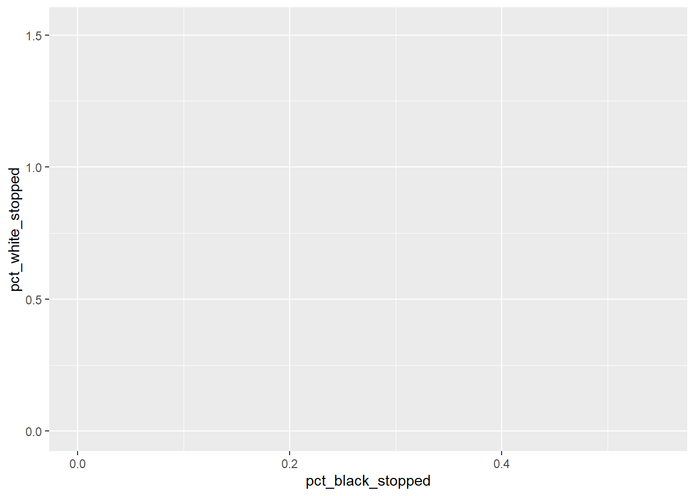
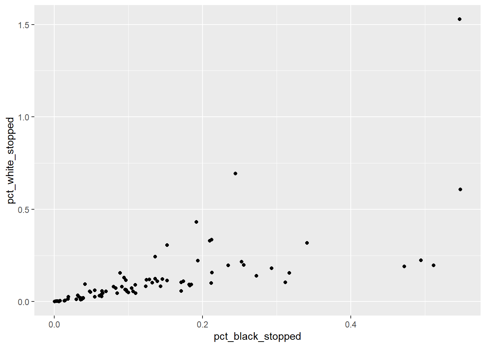
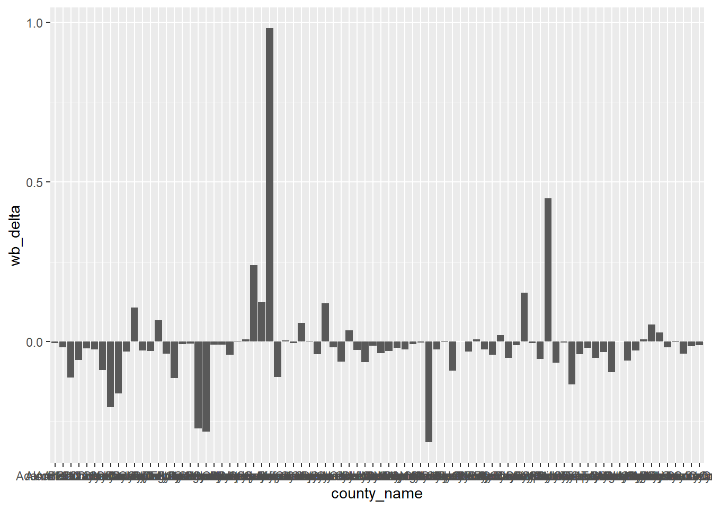

Data visualization dg ggplot2
Penulis : Ismail Akbar | Prof. Dr. Suhartono M.Kom | Magister Informatika | UIN Maulana Malik Ibrahim Malang
17 Februari 2021
Data Visualisasi
Data dan Informasi merupakan kebutuhan mendasar bagi kalangan manusia khususnya orang yang menekuni dalam bidang data sains. Cara yang efektif untuk menggambarkan antara konsep dan ide adalah melalui visualisasi.
Pada artikel ini akan dijelaskan memvisualisasikan data menggunakan ggplot. Untuk mengakses dataset yang akan kita gunakan, kita akan memuat library tidyverse dengan menjalankan kode ini:
library(tidyverse)## -- Attaching packages --------------------------------------- tidyverse 1.3.0 --## v ggplot2 3.3.3 v purrr 0.3.4
## v tibble 3.0.6 v dplyr 1.0.3
## v tidyr 1.1.2 v stringr 1.4.0
## v readr 1.4.0 v forcats 0.5.1## -- Conflicts ------------------------------------------ tidyverse_conflicts() --
## x dplyr::filter() masks stats::filter()
## x dplyr::lag() masks stats::lag()Sekarang kita akses sumber data yang akan kita visualisasikan. Pada artikel ini menggunakan Data Standar Pemberhentian Amerika Serikat.
stops_county <- read.csv('dataset-visualisasi/MS_stops_by_county.csv')Tampilkan data dalam bentuk frame dan Console.
head(stops_county)## No county_name county_fips driver_race_Black driver_race_White black_pop
## 1 1 Adams County 28001 583 359 17757
## 2 2 Alcorn County 28003 468 2877 4281
## 3 3 Amite County 28005 1589 1331 5416
## 4 4 Attala County 28007 2096 2107 8194
## 5 5 Benton County 28009 121 93 3078
## 6 6 Bolivar County 28011 3162 1364 21648
## white_pop pct_black_stopped pct_white_stopped wb_delta bias
## 1 12856 0.03283212 0.02792470 -0.004907418 black bias
## 2 31563 0.10932025 0.09115103 -0.018169221 black bias
## 3 7395 0.29338996 0.17998648 -0.113403478 black bias
## 4 10649 0.25579693 0.19785895 -0.057937971 black bias
## 5 5166 0.03931124 0.01800232 -0.021308918 black bias
## 6 11197 0.14606430 0.12181834 -0.024245957 black biasstr(stops_county)## 'data.frame': 82 obs. of 11 variables:
## $ No : int 1 2 3 4 5 6 7 8 9 10 ...
## $ county_name : chr "Adams County" "Alcorn County" "Amite County" "Attala County" ...
## $ county_fips : int 28001 28003 28005 28007 28009 28011 28013 28015 28017 28019 ...
## $ driver_race_Black: int 583 468 1589 2096 121 3162 726 1082 2394 248 ...
## $ driver_race_White: int 359 2877 1331 2107 93 1364 932 706 1474 365 ...
## $ black_pop : int 17757 4281 5416 8194 3078 21648 3991 3470 7549 2596 ...
## $ white_pop : int 12856 31563 7395 10649 5166 11197 10103 6702 9522 5661 ...
## $ pct_black_stopped: num 0.0328 0.1093 0.2934 0.2558 0.0393 ...
## $ pct_white_stopped: num 0.0279 0.0912 0.18 0.1979 0.018 ...
## $ wb_delta : num -0.00491 -0.01817 -0.1134 -0.05794 -0.02131 ...
## $ bias : chr "black bias" "black bias" "black bias" "black bias" ...Untuk langkah awal dalam visualisasi data dengan GGplot, atur dulu canvas atau area kerja untuk mengampung grafik datanya.
ggplot(data = stops_county, aes(x = pct_black_stopped, y = pct_white_stopped))
ggplot(data = stops_county, aes(x = pct_black_stopped, y = pct_white_stopped)) +
geom_point()
Kemudian tetapkan plot ke sebuah variabel dan Gambar Plotnya.
# Tetapkan plot ke variabel
MS_plot <- ggplot(data = stops_county, aes(x = pct_black_stopped, y = pct_white_stopped))
# Gambar plotnya
MS_plot + geom_point() Pada visulisasi data terdapat cara untuk menambahkan sebuah layer.
Pada visulisasi data terdapat cara untuk menambahkan sebuah layer.
# sintaks yang benar untuk menambahkan layer
MS_plot + geom_point()
# tidak akan menambah lapisan baru dan akan mengembalikan pesan kesalahan
MS_plot + geom_point()
Dan kita juga bisa menampilkan visualiasi data dengan bentuk grafik batang.
ggplot(stops_county, aes(x = county_name, y = wb_delta)) +
geom_col()
Referensi :
[1] E. Pierson, C. Simoiu, J. Overgoor, S. Corbett-Davies, D. Jenson, A. Shoemaker, V. Ramachandran, P. Barghouty, C. Phillips, R. Shroff, and S. Goel. “A large-scale analysis of racial disparities in police stops across the United States”. Nature Human Behaviour, Vol. 4, 2020. [2]I. J. Asmara, E. Achelia, W. Maulana, R. Wijayanti and Y. Rianto, “Teknik Visualisasi Grafik Berbasis Web di Atas Platform Open Source,” Seminar Nasional Aplikasi Teknologi Informasi 2009 (SNATI 2009), pp. 44- 47, 2009. [3] Hadley Wickham and Garrett Grolemund, R For Data Science, https://r4ds.had.co.nz/data-visualisation.html